All three keep B's idea, a window of light that changes size as the agents work. They have no outline art and no thin lines. Every card and button is filled in a colour that stands out from what it sits on, and the content is centred in its space. Each option also has its own button style. Pick one, or tell me which parts to mix.
A white half for asking and reading, with the window of light beside it. The four agents sit in the window as white cards. The window widens while they work and becomes the sources column for the answer.
Open B1The window is a moving band across the top, the way the OXS hub opens its pages. The question card overlaps its bottom edge. The band fills the screen while the agents work, and the answer and sources sit below it in white cards.
Open B2A rounded window holds the question, and the four agents fill a rail beside it. While they work the window widens. For the answer, a white sheet rises over the window and the rail turns into the sources.
Open B3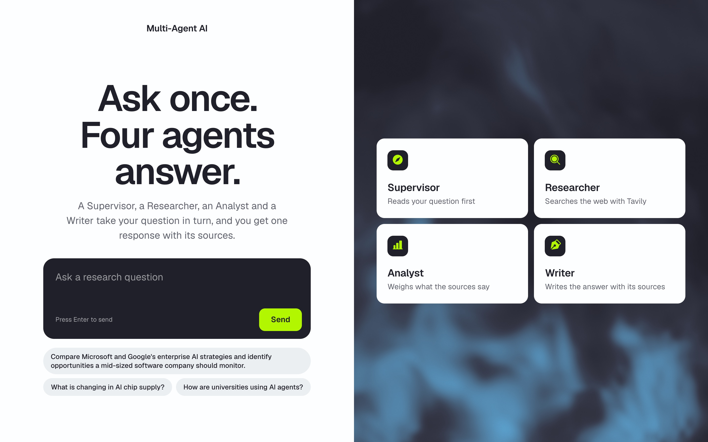
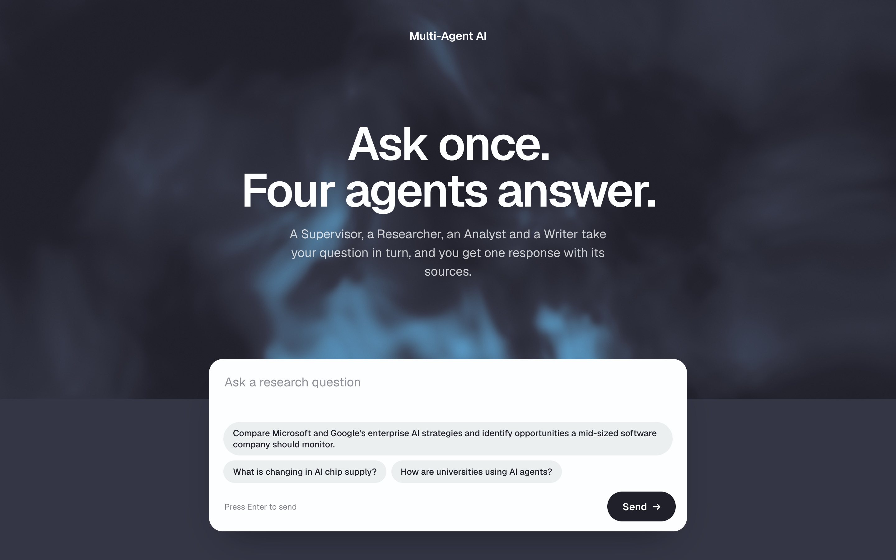
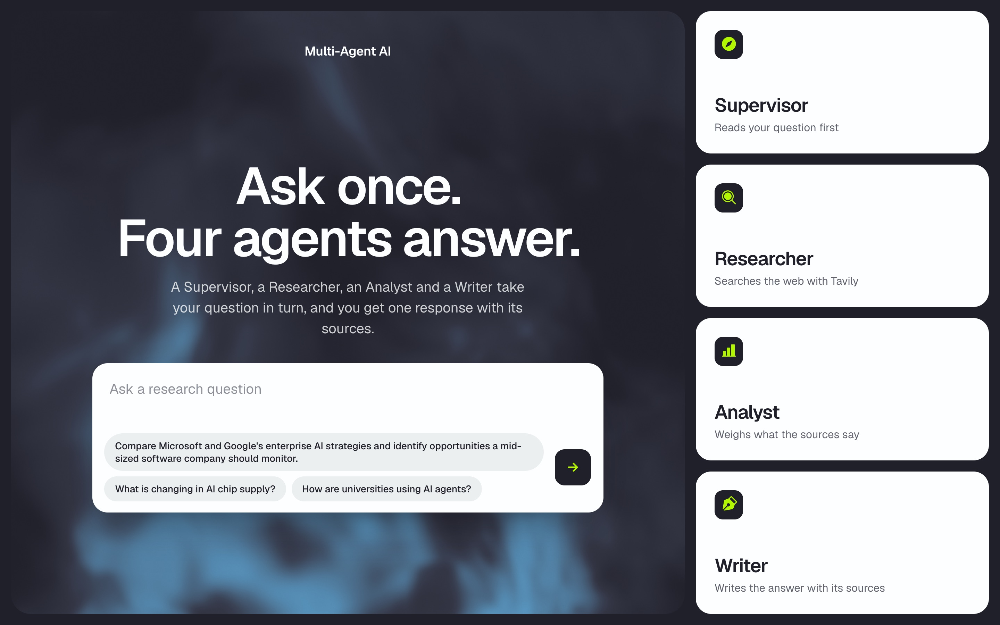
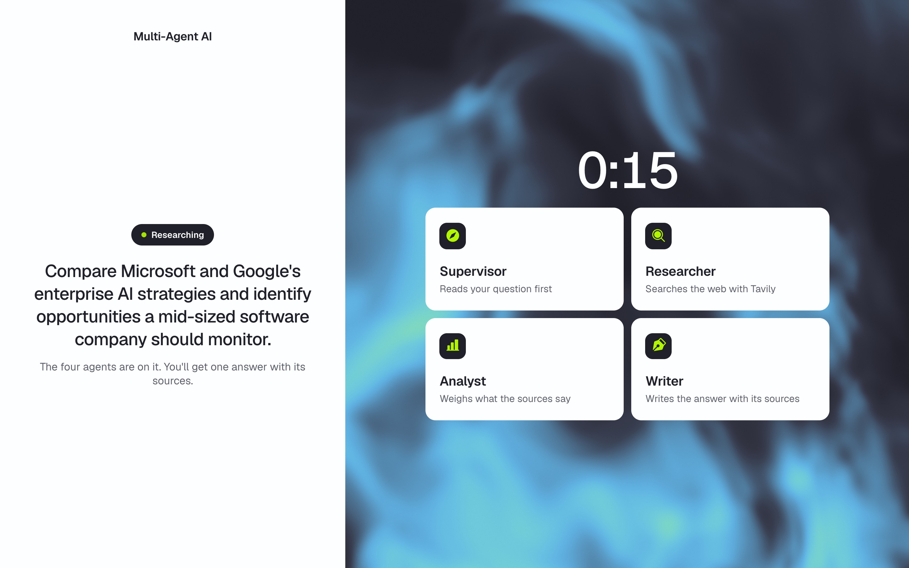
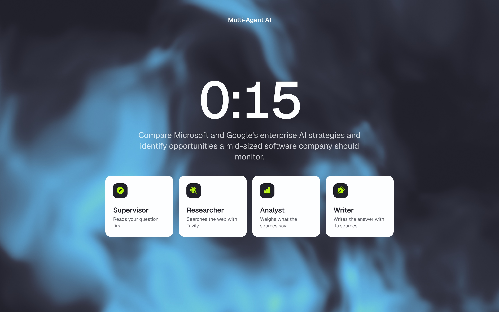
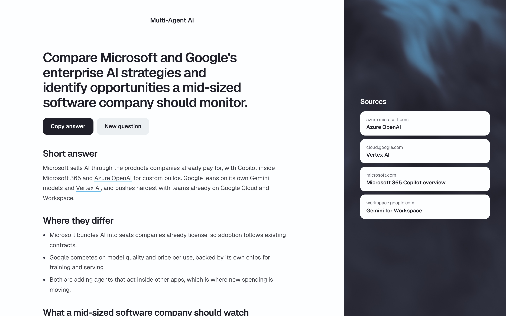
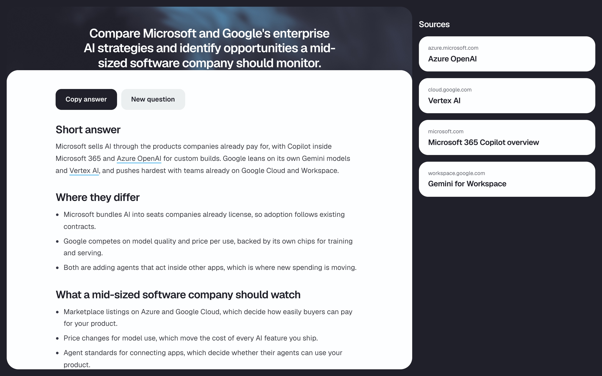
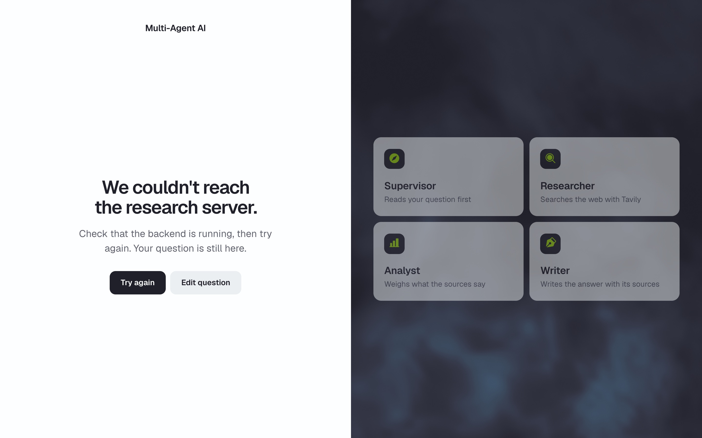
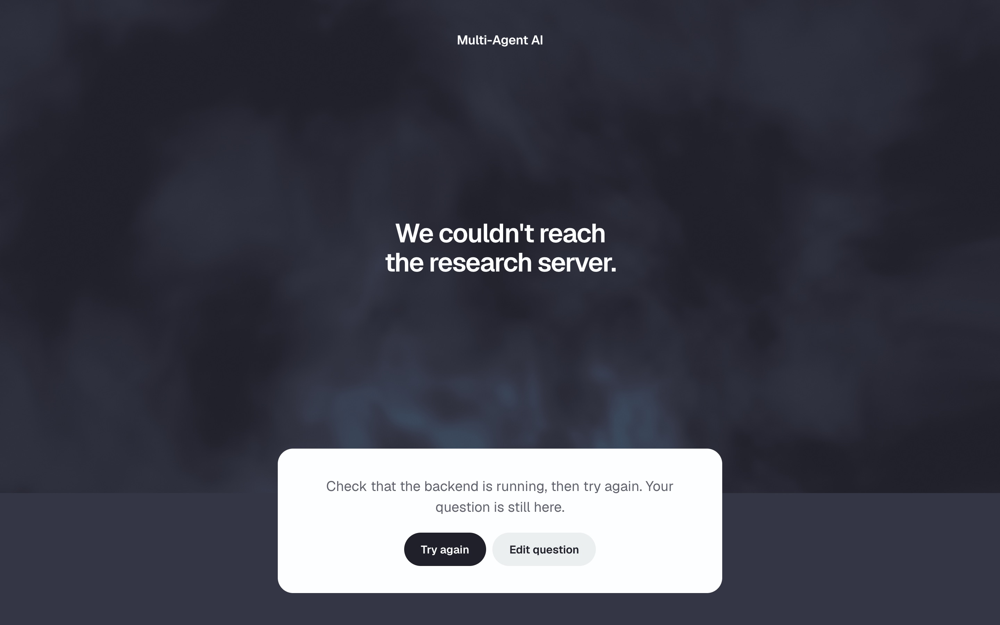
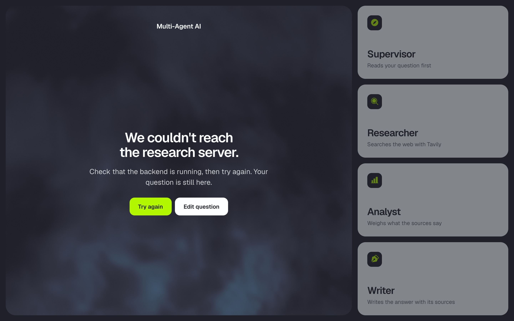
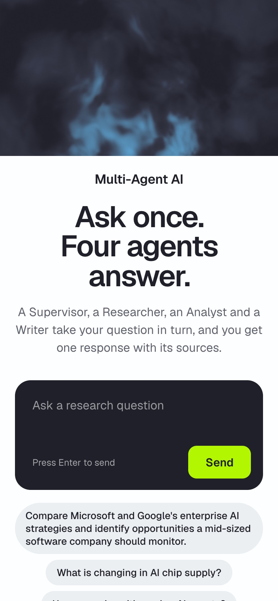
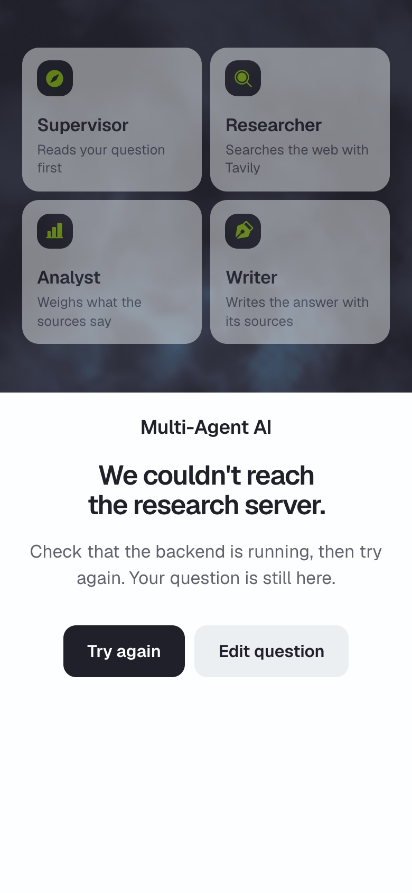
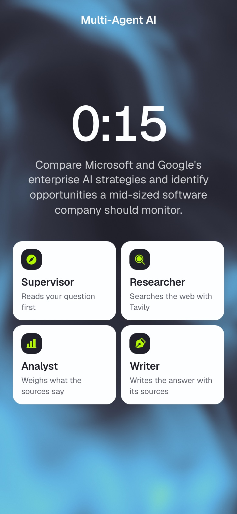
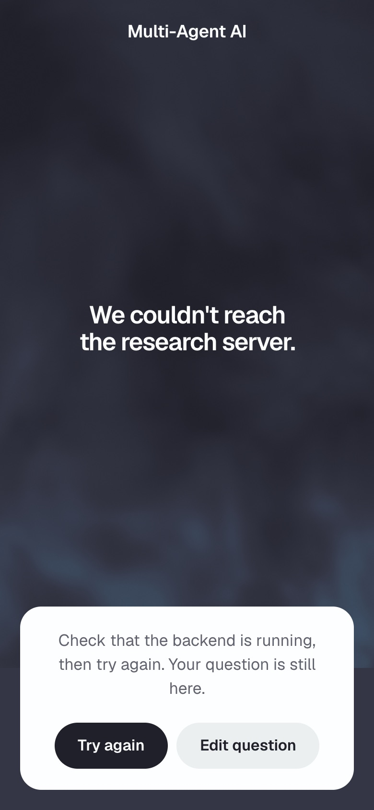
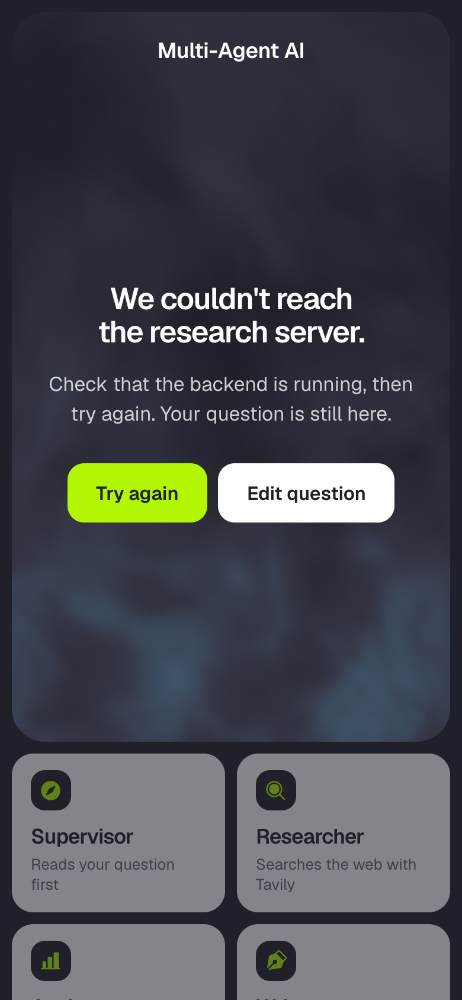